7. Momentum & Collisions#
Sep 02, 2026 | 7198 words | 48 min read
Chapter roadmap
Momentum provides a powerful way to analyze interactions, especially collisions that happen too quickly for the contact forces to be easy to track. This chapter connects force and impulse to changes in momentum, then uses momentum conservation to compare a system before and after a collision.
As you read, focus on three questions:
How do mass and velocity together determine an object’s momentum?
How does impulse change momentum, and why does the interaction time affect the average force?
How can a carefully chosen system and coordinate axis simplify one- and two-dimensional collision problems?
These ideas will let you model elastic and inelastic collisions and explain how rockets accelerate by ejecting mass.
7.1. Linear Momentum and Force#
7.1.1. Linear Momentum#
The scientific definition of linear momentum is consistent with people’s intuitive understanding of momentum: a large, fast-moving object has a greater momentum than a smaller, slower object. Momentum is directly proportional to both the object’s mass and velocity. Thus, a massive, slow-moving object can have the same momentum as a low-mass, fast-moving object. Momentum \(\vec{p}\) is a vector that describes how a mass \(m\) moves in the direction of its velocity \(\vec{v}\). The SI unit for momentum is \({\rm kg\cdot m/s}\).
Linear Momentum
Linear momentum \(\vec{p}\) is defined as the product of a system’s mass \(m\) multiplied by its velocity \(\vec{v}\), or
For motion in 1D, we may use the scalar version \(p = mv\) and assign the direction of \(\vec{v}\) using a positive or negative sign relative to our chosen coordinate system.
7.1.2. Example Problem: Momentum of a Football Player and a Football#
Example Problem: Calculating Momentum—A Football Player and a Football
The Problem
(a) Calculate the momentum of a \(110\ {\rm kg}\) football player running at \(8.00\ {\rm m/s}\). (b) Compare the player’s momentum with the momentum of a hard-thrown \(0.410\ {\rm kg}\) football moving at \(25.0\ {\rm m/s}\).
Show worked solution
The Model
The player and football are treated as separate objects. Their masses and speeds are given, but no direction is specified, so we calculate the magnitude of each momentum. The known values are \(m_{\rm player}=110\ {\rm kg}\), \(v_{\rm player}=8.00\ {\rm m/s}\), \(m_{\rm ball}=0.410\ {\rm kg}\), and \(v_{\rm ball}=25.0\ {\rm m/s}\). The unknowns are the two momentum magnitudes and their ratio.
The Math
The magnitude of an object’s momentum is the product of its mass and speed.
(a) The player’s momentum is
(b) The football’s momentum is
The ratio compares the two momentum magnitudes directly.
The Conclusion
The player has a momentum of \(880\ {\rm kg\cdot m/s}\), while the football has a momentum of \(10.3\ {\rm kg\cdot m/s}\). The player’s momentum is about \(86\) times the football’s momentum. This is reasonable because the player’s much larger mass more than compensates for the football’s greater speed.
Adapted from OpenStax, College Physics 2e, Example 8.1.
7.1.3. Momentum and Newton’s Second Law#
The importance of momentum was recognized early in the development of mechanics. Momentum was called the “quantity of motion,” where Newton stated his second law of motion in terms of momentum.
Newton’s Second Law of Motion in Terms of Momentum
The net external force \(\vec{F}_{\rm net}\) equals the change in momentum \(\Delta \vec{p}\) of a system divided by the time \(\Delta t\) over which it changes, or
Recall that we defined Newton’s second law as \(\vec{F}_{\rm net} = m\vec{a}\) in Chapter 3. We can see how this form is related to the change in momentum \(\Delta \vec{p}\).
First, we write directly the change in momentum as
If the mass of the system is constant, we can factor out the \(m\) on the right side to get
Then, we can substitute into Eqn. (7.2) to obtain
Notice that we now have the definition of acceleration from Chapter 1 on the right-hand side. With a simple substitution, we have
when the mass of the system is constant.
Newton’s second law of motion stated in terms of momentum is more generally applicable because it can be applied to systems where the mass is changing (e.g., rockets) and to systems of constant mass.
{kind=link}
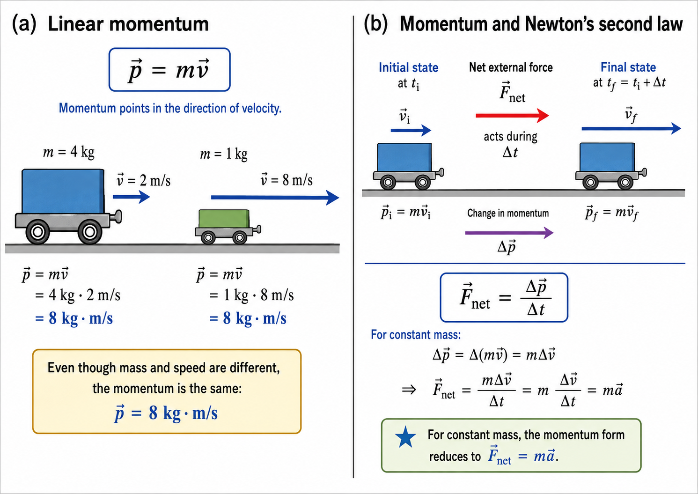
Fig. 7.1 Linear momentum and Newton’s second law. (a) Momentum depends on both mass and velocity. A \(4\ {\rm kg}\) cart moving at \(2\ {\rm m/s}\) and a \(1\ {\rm kg}\) cart moving at \(8\ {\rm m/s}\) each have a momentum of \(8\ {\rm kg\cdot m/s}\) in the direction of motion. (b) A net external force acting over a time interval \(\Delta t\) changes the momentum of a system. For constant mass, \(\Delta\vec{p}=m\Delta\vec{v}\), so the momentum form \(\vec{F}_{\rm net}=\Delta\vec{p}/\Delta t\) reduces to the familiar form \(\vec{F}_{\rm net}=m\vec{a}\).#
7.1.4. Example Problem: Average Force from a Tennis Racquet#
Example Problem: Calculating Force—Venus Williams’ Racquet
The Problem
During the 2007 French Open, Venus Williams hit a serve at \(58\ {\rm m/s}\). What average force did her racquet exert on the \(0.057\ {\rm kg}\) tennis ball if its horizontal velocity immediately before impact was negligible and it remained in contact with the racquet for \(5.0\ {\rm ms}\)?
Show worked solution
The Model
The tennis ball is the system of interest. We define the horizontal \(x\)-axis with \(+x\) in the direction of the outgoing serve. The ball’s initial horizontal velocity is \(v_i=0\), its final velocity is \(v_f=+58\ {\rm m/s}\), its mass is \(m=0.057\ {\rm kg}\), and the contact time is \(\Delta t=5.0\ {\rm ms}=5.0\times10^{-3}\ {\rm s}\). The unknown is the average horizontal force exerted by the racquet.
The Math
For a constant-mass object, the momentum change follows from the change in velocity.
The horizontal momentum change is therefore
Newton’s second law in momentum form relates the average force to this momentum change.
The Conclusion
The racquet exerts an average horizontal force of approximately \(6.6\times10^2\ {\rm N}\) in the \(+x\) direction. A force of this magnitude is reasonable because a substantial momentum change occurs during only \(5.0\ {\rm ms}\) of contact.
Adapted from OpenStax, College Physics 2e, Example 8.2.
7.2. Impulse#
The effect of a force on an object depends on how long it acts, as well as how great the force is. Consider the change in momentum on a tennis ball:
a very large force acting over a short time, or
a small force acting over a long time
can cause the same change in momentum. A quick, large force from a tennis racquet can launch the tennis ball straight up in the air. But the weaker gravitational force eventually brings the ball back down as it acts over a much longer time, where it effectively reverses the momentum of the ball.
Impulse: Change in Momentum
We write the change in momentum by rearranging Eqn. (7.2) as
where the right-hand side \(\vec{F}_{\rm net}\Delta t\) is called the impulse. Impulse is the same as the change in momentum.
There are many ways in which an understanding of impulse affects us in our everyday life. The dashboard padding (and airbags) allow the net force on the occupants in a car to act over a much longer time when there is a sudden stop. The momentum change is the same for an occupant, whether the airbag is deployed or not, but the force will be much less if it acts over a larger time.
Modern cars incorporate lightweight materials and energy-absorbing structures for two primary reasons:
Lightweight materials allow for a lighter vehicle, which means the engine needs to do less work to move the car and you get better gas mileage.
Vehicle crumple zones deform in a collision, which results in a longer collision time and lessens the force felt by the occupants.
Deaths during car races decreased dramatically when the rigid frames were replaced with parts that could crumple or collapse in the event of an accident.
The bones in your body will fracture if the force on them is too large. If you jump onto the floor from a table, the force on your legs can be immense if you land stiff-legged on a hard surface. Rolling on the ground after jumping from the table (on a soft mat) extends the time over which the force (on you from the ground) acts. This helps explain how Jackie Chan could survive with minimal injury after performing all of his martial arts stunts.

Fig. 7.2 Increasing the stopping time in a car crash. During a collision, the car and its occupants undergo a large change in momentum. The front of the car is designed to crumple, increasing the time \(\Delta t\) over which this momentum change occurs. From \(\vec{F}_{\rm net}=\Delta\vec{p}/\Delta t\), a longer collision time means a smaller average force for the same change in momentum. Airbags and dashboard padding work for the same reason by increasing the stopping time of the occupants. Source: IIHS crash-test animation on Tenor.#
{kind=link}

Fig. 7.3 Increasing the stopping time during a stunt. In this stunt from Project A (1983), Jackie Chan falls from a clock tower and passes through flexible awnings before reaching the ground. The awnings deform as he hits them, changing his momentum over several successive interactions rather than bringing him to rest in a single rigid collision. Increasing the total time over which his momentum changes reduces the average force on his body. Bending the legs, rolling after a landing, and landing on a soft mat use the same impulse principle. Source: Jackie Chan falling in Project A on Tenor.#
{kind=link}
7.2.1. Example Problem: Billiard-Ball Impulses at a Wall#
Example Problem: Calculating Impulses—Two Billiard Balls Striking a Rigid Wall
The Problem
Two identical billiard balls strike a rigid wall with the same speed and rebound without a change in speed. The first ball strikes perpendicular to the wall. The second strikes at an angle of \(30^\circ\) from the perpendicular and rebounds at the same angle. (a) Determine the direction of the force on the wall due to each ball. (b) Calculate the ratio of the impulse magnitude for the perpendicular collision to that for the angled collision.
Show worked solution
The Model
Each billiard ball has mass \(m\) and speed \(u\). We define the \(x\)-axis perpendicular to the wall, with \(+x\) pointing toward the wall, and the \(y\)-axis parallel to the wall. During each rebound, the \(x\)-component of momentum reverses while the \(y\)-component remains unchanged. The impulse on a ball is its momentum change; Newton’s third law gives the opposite force direction on the wall.
The Math
For the ball that strikes perpendicular to the wall, the initial and final \(x\)-momenta are \(+mu\) and \(-mu\). Its impulse is therefore
For the ball that strikes at \(30^\circ\) from the perpendicular, the \(x\)-component has magnitude \(mu\cos(30^\circ)\) and reverses during the rebound. Its impulse is
The impulses have no \(y\)-component because the parallel momentum component does not change. The ratio of their magnitudes is
The Conclusion
The wall exerts an impulse on each ball in the \(-x\) direction, so each ball exerts a force on the wall in the \(+x\) direction. The perpendicular collision produces an impulse about \(1.15\) times as large as the angled collision because the entire momentum reverses along the wall’s normal direction.
Adapted from OpenStax, College Physics 2e, Example 8.3.
Our definition of impulse includes an assumption that the force is constant over time interval \(\Delta t\). Forces are usually not constant, where they vary considerably even during brief time intervals. It is possible to find the average force \(\vec{F}_{\rm eff}\) that produces the same result as the corresponding time-varying force.
Figure 7.4 illustrates the force for a ball bouncing off the floor qualitatively. The area under the curve has units of momentum and is equal to the impulse or change in momentum between time \(t_1\) and \(t_2\). The area under the curve is equal to the area of the rectangle bounded by \(F_{\rm eff}\), \(t_1\), and \(t_2\).
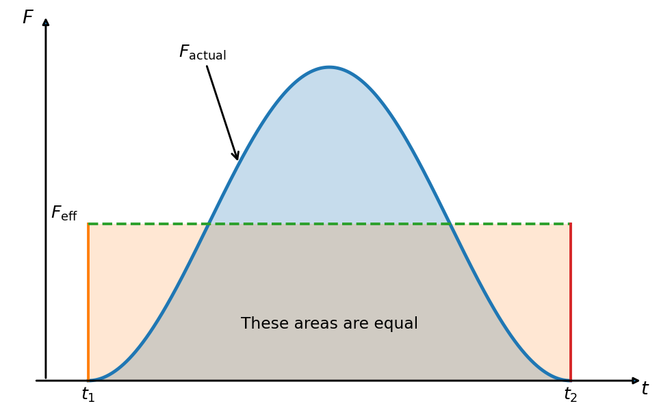
Fig. 7.4 Impulse for a time-varying force. The force during a collision generally changes with time. The impulse is the area under the actual force-versus-time curve between \(t_1\) and \(t_2\). An effective constant force \(F_{\rm eff}\) can be defined so that the area of the rectangle \(F_{\rm eff}(t_2-t_1)\) is equal to the area under the time-varying force curve. Because the two areas are equal, the actual and effective forces produce the same impulse and therefore the same change in momentum. Adapted from: OpenStax, College Physics 2e, Figure 8.2.#
Show code cell content
import numpy as np
import matplotlib.pyplot as plt
from myst_nb import glue
# ---------------- force-time model ----------------
t1 = 1.0
t2 = 5.0
F_max = 6.0
dt = t2 - t1
t = np.linspace(0.0, 6.0, 1000)
F_actual = np.zeros_like(t)
mask = (t >= t1) & (t <= t2)
F_actual[mask] = F_max*np.sin(np.pi*(t[mask]-t1)/dt)**2
# The effective force has the same impulse as the actual force.
if hasattr(np, "trapezoid"):
impulse = np.trapezoid(F_actual, t)
else:
impulse = np.trapz(F_actual, t)
F_eff = impulse/dt
# ---------------- figure ----------------
fig, ax = plt.subplots(figsize=(7, 4.5), dpi=140)
# Actual force curve
ax.plot(t[mask], F_actual[mask], linewidth=2.5)
# Effective constant-force rectangle
ax.plot([t1, t1], [0.0, F_eff], linewidth=2)
ax.plot([t1, t2], [F_eff, F_eff], linestyle="--", linewidth=2)
ax.plot([t2, t2], [F_eff, 0.0], linewidth=2)
# Shaded impulse areas
ax.fill_between(t[mask], 0.0, F_actual[mask], alpha=0.25)
ax.fill_between([t1, t2], [0.0, 0.0], [F_eff, F_eff], alpha=0.18)
# ---------------- annotations ----------------
# Actual force
t_label = 2.25
F_label = np.interp(t_label, t, F_actual)
ax.annotate(r'$F_{\rm actual}$', xy=(t_label, F_label), xytext=(1.75, 6.2), arrowprops=dict(arrowstyle='->', lw=1.5), fontsize=13)
# Effective force
ax.text(0.92, F_eff+0.12, r'$F_{\rm eff}$', fontsize=13, horizontalalignment='right')
# Equal-area statement
ax.text(3.0, 1.0, 'These areas are equal', fontsize=12, horizontalalignment='center')
# t1 and t2 labels
ax.text(t1, -0.35, r'$t_1$', fontsize=13, horizontalalignment='center')
ax.text(t2, -0.35, r'$t_2$', fontsize=13, horizontalalignment='center')
# ---------------- OpenStax-style axes ----------------
ax.set_xlim(0.35, 5.65)
ax.set_ylim(-0.55, 7.1)
ax.set_xticks([])
ax.set_yticks([])
for spine in ax.spines.values():
spine.set_visible(False)
# Horizontal time axis
ax.annotate('', xy=(5.6, 0.0), xytext=(0.55, 0.0), arrowprops=dict(arrowstyle='-|>', lw=1.5))
ax.text(5.58, -0.25, r'$t$', fontsize=14)
# Vertical force axis
ax.annotate('', xy=(0.65, 7.0), xytext=(0.65, 0.0), arrowprops=dict(arrowstyle='-|>', lw=1.5))
ax.text(0.45, 6.85, r'$F$', fontsize=14)
fig.tight_layout()
glue("impulse_force_time", fig, display=False)
plt.close(fig)
7.3. Conservation of Momentum#
For a sufficiently large, isolated system, the momentum of the system is conserved, where there can be changes in momentum for components of the system. For example, if a football player runs into the goalpost in the end zone, there will be a force on him that causes him to bounce backward. The backward momentum felt by an object (or person) exerting force on another object is often called a recoil. The Earth recoils (conserving momentum) because of the force applied to it through the goalpost. Earth is several orders of magnitude more massive than the player, where its recoil is immeasurably small and can be neglected.
Consider what happens if the masses of two colliding objects are more similar than the masses of a football player and Earth. For example, consider two railcars bumping into one another. Both cars are coasting along the track in the same direction when the lead car with a mass \(m_2\) is bumped by the trailing car with a mass \(m_1\).
The only unbalanced force on each car is the force of the collision, assuming that friction is negligible. Car 1 slows down as a result of the collision (losing some momentum), while car 2 speeds up (gains some momentum). The total momentum of the two-car system remains constant.
{kind=link}
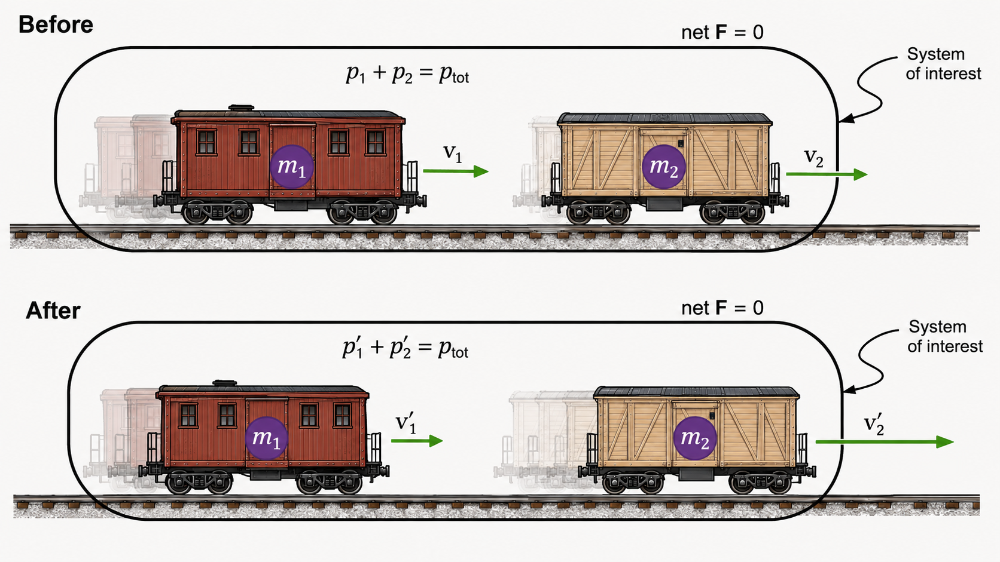
Fig. 7.5 Conservation of momentum for a two-car collision. The top panel shows two railcars before the collision, with masses \(m_1\) and \(m_2\) moving to the right with velocities \(v_1\) and \(v_2\). The bottom panel shows the same cars after the collision, now moving with velocities \(v_1^\prime\) and \(v_2^\prime\). If the net external force on the two-car system is negligible during the interaction, then the total momentum of the system is conserved, so the total momentum before the collision equals the total momentum after the collision.#
Using the definition of impulse, we can write the change in momentum of car 1 \(\Delta p_1\) in terms of the force \(F_1\) on car 1 due to car 2 and time interval \(\Delta t\) as
where we drop the vector notation because the cars are moving in the same direction (to the right). Intuitively, it makes sense that the collision time \(\Delta t\) is the same for both cars. This assumption has to be modified for objects moving near the speed of light.
Similarly, we find the change in momentum of car 2 \(\Delta p_2\) as
where \(F_2\) is the force on car 2 due to car 1. We know from Newton’s third law that \(F_2 = -F_1\), so we have
Since the interaction time \(\Delta t\) is the same, they cancel on both sides so that we find
The changes in momentum add to zero, which means the total momentum of the two-car system is constant. We write this mathematically as
where primed momenta (\(p_1^\prime\) and \(p_2^\prime\)) represent the state of cars 1 and 2 after the collision and the unprimed momenta denote the state of the cars before the collision.
Conservation of Momentum
The conservation of momentum principle is valid in our 1D treatment, where it can be applied to any isolated system with any number of objects in it. In general, the relation is given by
Recall that the center-of-mass of a system is the effective average location of the mass of the system. The total momentum can be represented as the momentum of the center-of-mass of the system. An isolated system is defined as one where the net external force is zero (\(\vec{F}_{\rm net} = 0\)).
The conservation of momentum principle can be applied to systems as different as a comet striking the Earth and a gas containing huge numbers of atoms and molecules. Conservation of momentum is violated only when the net external force is not zero. But another larger system can always be considered in which momentum is conserved by simply including the source of the external force. For example, the collision within the two-railcar system conserves momentum, while each one-car system does not.
7.4. Elastic Collisions in 1D#
Let’s consider an elastic collision of two railcars because the railroad track necessarily presents a one-dimensional (1D) problem. An elastic collision is one that also conserves internal kinetic energy. Elastic collisions are also called “bouncy collisions” where the two objects recoil from each other relative to the center-of-mass of the system. Internal kinetic energy is the sum of the kinetic energies of the objects in the system.
![Two-panel diagram of an elastic collision between two railroad cars on a frictionless surface. In the top panel, before the collision, railroad cars of masses m1 and m2 both move to the right with velocities v1 and v2. In the bottom panel, after the collision, the car of mass m1 moves to the left with velocity v1 prime, while the car of mass m2 continues to the right with velocity v2 prime. Both panels identify the two-car system as the system of interest, indicate that the net external force is zero, and show that total momentum is conserved.](../_images/before_and_after_elastic_train_collision.png)
Fig. 7.6 Elastic collision between two railroad cars. The top panel shows two railroad cars before the collision, both moving on a frictionless surface with velocities \(v_1\) and \(v_2\). The bottom panel shows the cars after an elastic collision, where the lighter car reverses direction and the heavier car continues moving to the right with a new speed. For the two-car system, the net external force is negligible, so the total momentum is conserved: \(p_1 + p_2 = p_{\rm tot}\) before the collision and \(p_1^\prime + p_2^\prime = p_{\rm tot}\) afterward. Because the collision is elastic, the total kinetic energy is also conserved, so \(\mathrm{KE}_1^\prime + \mathrm{KE}_2^\prime = \mathrm{KE}_1 + \mathrm{KE}_2\).#
{kind=link}
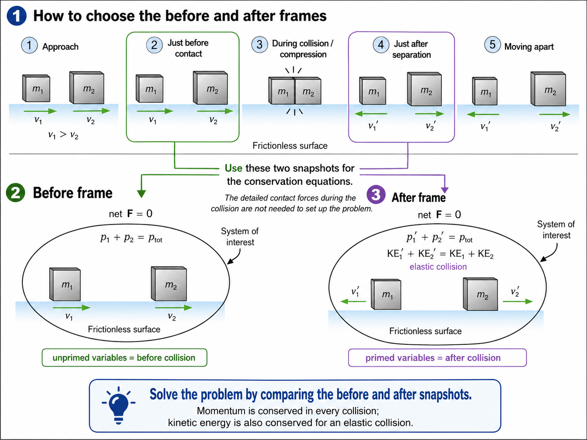
Fig. 7.7 Choosing the before and after frames for a 1D elastic collision. To solve a collision problem, we do not need to model the detailed contact forces during the brief interaction. Instead, we choose two snapshots: one taken just before contact and one taken just after separation. These snapshots define the before and after frames used in the conservation equations. In the before frame, the unprimed variables \(v_1\) and \(v_2\) describe the velocities of the two objects prior to the collision. In the after frame, the primed variables \(v_1^\prime\) and \(v_2^\prime\) describe the velocities immediately after the collision. For the two-object system, momentum is conserved, and for an elastic collision the total kinetic energy is also conserved.#
{kind=link}
Fig. 7.8 Elastic collision in motion. This animation shows a head-on elastic collision between two equal-mass billiard balls. Before the collision, the balls move toward one another with equal speeds, as indicated by the velocity vectors \(\vec{v}_1\) and \(\vec{v}_2\). After the collision, the balls reverse direction and move away with the same speed they had initially, now labeled \(\vec{v}_1^{\prime}\) and \(\vec{v}_2^{\prime}\). This illustrates the defining features of an elastic collision: the total momentum is conserved, and the total kinetic energy is also conserved.#
Truly elastic collisions can only be achieved for subatomic particles (e.g., electrons striking nuclei). Macroscopic collisions can be very nearly (but not quite) elastic, where some kinetic energy is always converted into other forms of energy (e.g., heat transfer due to friction and sound). Two common scenarios used to illustrate macroscopic collisions are two steel blocks on ice and two carts with spring bumpers on an air track. Icy surfaces and air tracks are nearly frictionless, which allow nearly elastic collisions on them.
Let’s consider two railcars as an approximation of two carts on an air track. From there we can solve problems involving 1D elastic collisions using conservation of momentum and internal kinetic energy. We can write the conservation of momentum for two objects by setting the momentum of the system before the collision equal to the momentum of the system after the collision. Here we use the prime \(^\prime\) to denote the state of a variable after the collision.
Mathematically, we have
which includes the masses of the railcars \(m_1\) and \(m_2\), as well as their respective velocities before (\(v_1\) and \(v_2\)) and after (\(v_1^\prime\) and \(v_2^\prime\)) the collision.
An elastic collision conserves internal kinetic energy, where we have an additional equation given by
Typically these relations are used together to solve problems for elastic collisions, where the post-collision velocities (primed) depend on the pre-collision velocities (unprimed) and the masses:
7.4.1. Example Problem: Velocities After an Elastic Collision#
Example Problem: Calculating Velocities Following an Elastic Collision
The Problem
A \(0.500\ {\rm kg}\) object moving at \(4.00\ {\rm m/s}\) collides elastically with a stationary \(3.50\ {\rm kg}\) object. Calculate the final velocity of each object.
Show worked solution
The Model
The two objects form the system of interest. We define the \(x\)-axis along the motion of object 1, with \(+x\) in its initial direction. The known quantities are \(m_1=0.500\ {\rm kg}\), \(m_2=3.50\ {\rm kg}\), \(v_1=+4.00\ {\rm m/s}\), and \(v_2=0\). Because the collision is elastic and the net external force is negligible, both momentum and kinetic energy are conserved. The unknowns are \(v_1^\prime\) and \(v_2^\prime\).
The Math
The one-dimensional elastic-collision relations express each final velocity in terms of the masses and initial velocities. Because object 2 is initially at rest, the relation for object 1 becomes
The relation for object 2 gives
The initial and final total momenta both equal \(2.00\ {\rm kg\cdot m/s}\), and the initial and final kinetic energies both equal \(4.00\ {\rm J}\), consistent with an elastic collision.
The Conclusion
After the collision, the smaller object moves at \(-3.00\ {\rm m/s}\) and therefore rebounds opposite its initial direction. The larger object moves forward at \(+1.00\ {\rm m/s}\). This behavior is reasonable: a light object striking a much heavier stationary object rebounds while transferring some momentum to the heavier object.
Adapted from OpenStax, College Physics 2e, Example 8.4.
7.5. Inelastic Collisions in 1D#
For an inelastic collision, the internal kinetic energy changes (it is not conserved). This means that the forces between colliding objects may remove or add internal kinetic energy. Work done by internal forces may change the forms of energy within a system.
For inelastic collisions, this internal work may transform some internal kinetic energy into heat transfer. Or it may convert stored energy into internal kinetic energy (e.g., exploding bolts separate a satellite from its launch vehicle). A perfectly inelastic collision (sometimes called “sticky collisions”) occurs when the objects stick together, reducing the internal kinetic energy to the minimum it can have while still conserving momentum.
{kind=link}
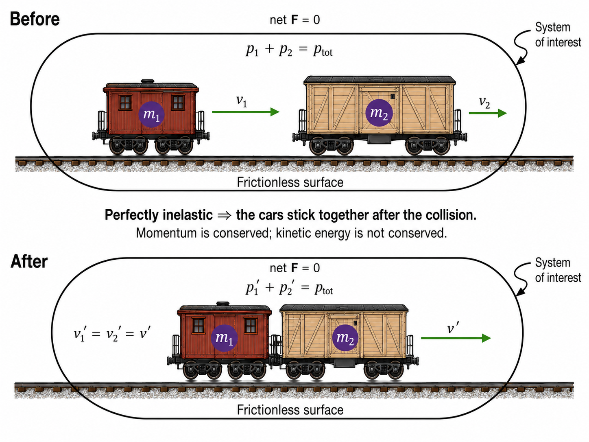
Fig. 7.9 Perfectly inelastic collision between two railroad cars. Before the collision, the railcars of masses \(m_1\) and \(m_2\) move independently with velocities \(v_1\) and \(v_2\). During a perfectly inelastic collision, the cars couple together and subsequently move with the same velocity, so \(v_1^\prime=v_2^\prime=v^\prime\). Because the net external force on the two-car system is negligible during the collision, the total momentum is conserved. Kinetic energy, however, is not conserved in a perfectly inelastic collision.#
{kind=link}
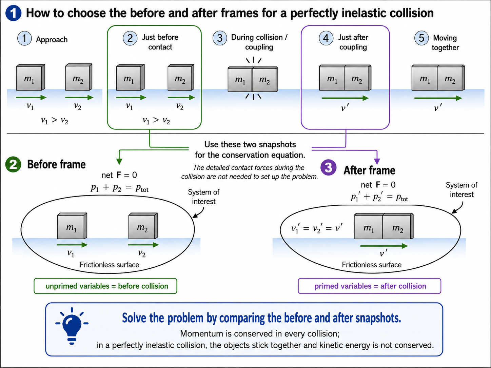
Fig. 7.10 Building the before and after frames. A collision problem can be simplified by choosing two snapshots: one just before contact and one just after the collision is complete. The complicated forces and deformation that occur during the brief collision do not need to be modeled directly. In the before frame, the objects have separate velocities \(v_1\) and \(v_2\). In the after frame of a perfectly inelastic collision, the objects are joined and therefore share a common velocity, \(v_1^\prime=v_2^\prime=v^\prime\). These two snapshots provide the states that are compared using conservation of momentum.#
{kind=link}
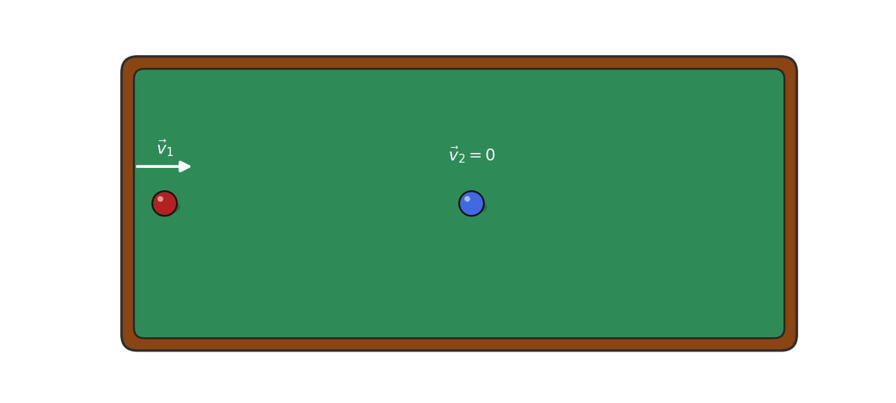
Fig. 7.11 Perfectly inelastic rear-end collision. Ball 1 initially moves toward the stationary ball 2. After the collision, the two equal-mass objects remain together and move with the same final velocity \(\vec{v}^{\,\prime}\). Conservation of momentum requires the momentum carried initially by ball 1 to become the momentum of the combined system. Because the combined mass is larger, its final speed is smaller than the initial speed of ball 1. Momentum is conserved, but kinetic energy is not.#
{kind=link}
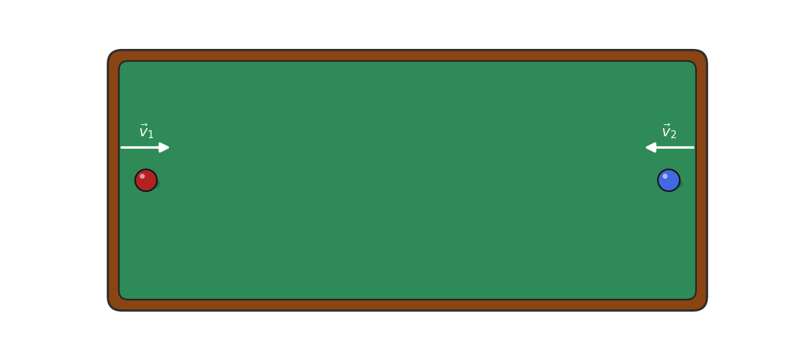
Fig. 7.12 Perfectly inelastic head-on collision. The two equal-mass objects approach one another with equal speeds in opposite directions. Their momenta therefore have equal magnitudes but opposite directions, giving the system zero total momentum before the collision. After the objects stick together, conservation of momentum requires the combined system to remain at rest, so \(\vec{v}^{\,\prime}=0\). This example emphasizes that momentum is a vector: two moving objects can have a total momentum of zero.#
Consider two objects with equal masses \(m\) and equal speeds \(v\) that head toward each other and stick together. Their total initial kinetic energy is
Since the two objects have the same speed but are moving in opposite directions, we have \(v_1 = v\) and \(v_2 = -v\). Through conservation of momentum we must have \(p_{\rm sys} = p_{\rm sys}^\prime\). When we equate these momenta, we get
where \(v^\prime\) is the velocity of the combined masses (i.e., masses stuck together). We can see that
because the mass does not go to zero, so the final velocity must be zero. The animation illustrates this idealized result. Real billiard balls do not stick together, so their collision is not perfectly inelastic.
If the final velocity is zero, then the final internal kinetic energy of the system is also zero. In the case of the billiard balls, the energy escapes through friction and/or sound.
In general, we can solve for the final velocity \(\vec{v}^\prime\) given a two-body collision consisting of two masses (\(m_1\) and \(m_2\)) with before-collision velocities \(\vec{v}_1\) and \(\vec{v}_2\), respectively. We use the conservation of momentum equation to get:
Note that you need to account for the (positive/negative) direction of the before collision velocities (\(v_1\) and \(v_2\)) when using this result in scalar form.
7.5.1. Example Problem: A Goalie Catches a Hockey Puck#
Example Problem: Velocity and Kinetic-Energy Change—A Puck and a Goalie
The Problem
A \(70.0\ {\rm kg}\) ice hockey goalie, initially at rest on nearly frictionless ice, catches a \(0.150\ {\rm kg}\) puck moving at \(35.0\ {\rm m/s}\). (a) Find the recoil velocity of the goalie and puck. (b) How much kinetic energy is lost during the collision?
Fig. 7.13 A puck and goalie before and after a perfectly inelastic collision. Before the collision, the puck carries all of the system’s momentum while the goalie is at rest. After the goalie catches the puck, both move together with the same final velocity. Momentum is conserved, but kinetic energy is not. Source: OpenStax, College Physics 2e, Figure 8.8.#
Show worked solution
The Model
The puck and goalie form the system of interest. We define the \(x\)-axis along the puck’s initial motion, with \(+x\) in that direction. The puck has \(m_1=0.150\ {\rm kg}\) and \(v_1=+35.0\ {\rm m/s}\); the goalie has \(m_2=70.0\ {\rm kg}\) and \(v_2=0\). Because the goalie catches the puck, they share a common final velocity \(v^\prime\). Momentum is conserved, but kinetic energy is not conserved in this perfectly inelastic collision.
The Math
(a) Conservation of momentum relates the state before the collision to the combined motion afterward.
Because the goalie is initially at rest, the common final velocity is
(b) Before the collision, only the puck has kinetic energy.
After the collision, the goalie and puck move together.
The change in kinetic energy is
The Conclusion
The goalie and puck move together at \(7.48\times10^{-2}\ {\rm m/s}\) in the puck’s original direction. The system loses \(91.7\ {\rm J}\) of kinetic energy, with nearly all of the puck’s initial kinetic energy transformed into thermal energy, sound, and deformation. The small final speed is reasonable because the goalie’s mass is much larger than the puck’s mass.
Adapted from OpenStax, College Physics 2e, Example 8.5.
7.5.2. Example Problem: Energy Released in a Cart Collision#
Example Problem: Final Velocity and Energy Release—Two Carts Collide
The Problem
Cart 1 carries a compressed spring and has a combined mass of \(0.350\ {\rm kg}\) and an initial velocity of \(+2.00\ {\rm m/s}\). Cart 2 has a mass of \(0.500\ {\rm kg}\) and an initial velocity of \(-0.500\ {\rm m/s}\). After the carts collide inelastically on a frictionless track, cart 1 recoils at \(-4.00\ {\rm m/s}\). (a) What is the final velocity of cart 2? (b) How much energy did the spring release if all of it became kinetic energy?
Show worked solution
Fig. 7.14 A spring releases energy during a cart collision. The air track makes the net external horizontal force negligible, so the two-cart system conserves momentum. The compressed spring stores energy before the collision and releases it during the interaction, increasing the system’s kinetic energy. Source: OpenStax, College Physics 2e, Figure 8.9.#
The Model
The two carts and compressed spring form the system of interest. We define the \(x\)-axis along the track with \(+x\) in cart 1’s initial direction. The known quantities are \(m_1=0.350\ {\rm kg}\), \(m_2=0.500\ {\rm kg}\), \(v_1=+2.00\ {\rm m/s}\), \(v_2=-0.500\ {\rm m/s}\), and \(v_1^\prime=-4.00\ {\rm m/s}\). The track is frictionless, so momentum is conserved. The spring force is internal to the system and may increase the system’s kinetic energy.
The Math
(a) Conservation of momentum for the two carts is
Solving for cart 2’s final velocity gives
(b) The system’s kinetic energy before the collision is
The kinetic energy after the collision is
The released spring energy equals the increase in kinetic energy.
The Conclusion
Cart 2 moves at \(+3.70\ {\rm m/s}\) after the interaction, so it travels in the \(+x\) direction. The spring releases \(5.46\ {\rm J}\), increasing the system’s kinetic energy. Momentum remains conserved because the spring transfers momentum internally between the carts.
Adapted from OpenStax, College Physics 2e, Example 8.6.
7.6. Collisions of Point Masses in 2D#
For 1D collisions, the incoming and outgoing velocities are all along the same line. Most collisions do not occur along a single axis. In this case, we consider the collisions within a plane as a two-dimensional collision. The general approach is to choose a convenient coordinate system and resolve the motion into components (see Chapter 2) along perpendicular axes. This allows us to find a pair of 1D problems to be solved simultaneously.
A classic example is a 2D collision of billiard (pool) balls. However, a complication arises when the balls have spin before or after their collision. We will not consider rotation until later, which means we ignore it for now. To avoid the possibility of spin, we consider only the scattering of point masses (e.g., structureless particles that cannot rotate or spin).
{kind=link}
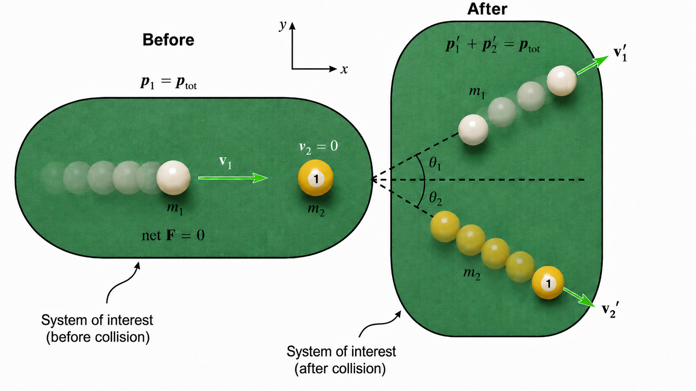
Fig. 7.15 Two-dimensional elastic collision. Before the collision, the cue ball moves along the \(+x\) direction while the 1 ball is initially at rest. Because the cue ball strikes the 1 ball off-center, both balls change direction during the collision. Afterward, the cue ball moves at an angle \(\theta_1\) above the original line of motion while the 1 ball moves at an angle \(\theta_2\) below it. The two balls together form the system of interest, so the total momentum before and after the collision is the same when the net external force is negligible.#
{kind=link}
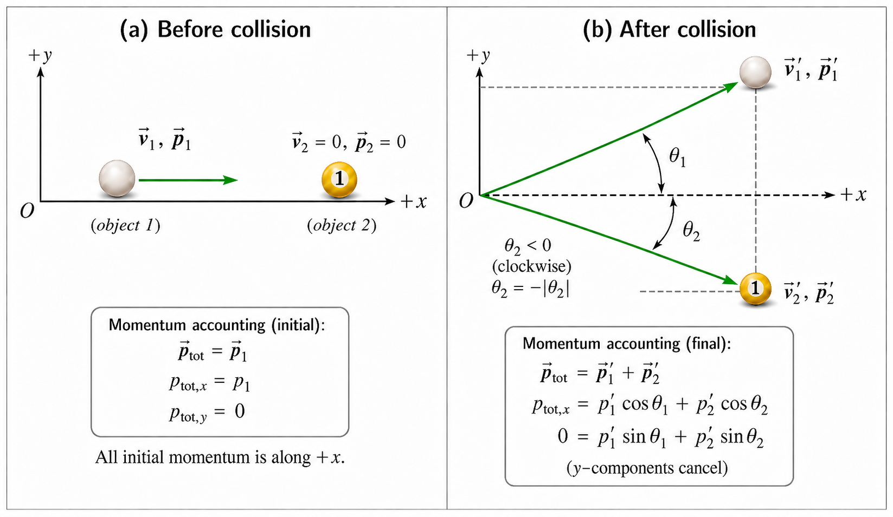
Fig. 7.16 Accounting for momentum before and after the collision. In the before frame, the 1 ball is at rest, so all of the system’s initial momentum is carried by the cue ball along \(+x\). After the collision, the momentum is shared between the two balls. Conservation of momentum must hold independently in the \(x\) and \(y\) directions: the two final \(x\)-components combine to reproduce the initial momentum, while the final \(y\)-components must cancel because the system initially had no momentum in the \(y\) direction. With counterclockwise rotation defined as positive, \(\theta_1>0\), while \(\theta_2<0\) because the 1 ball moves clockwise from the original \(+x\) direction.#
{kind=link}
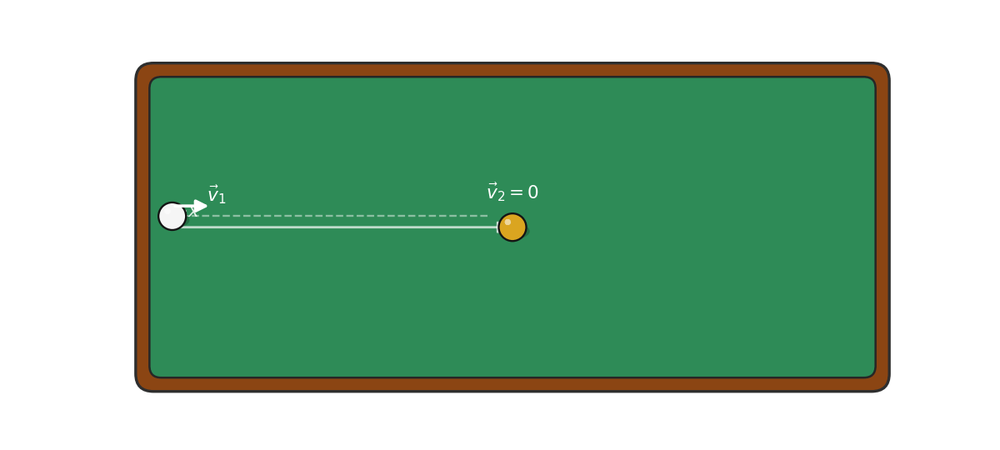
Fig. 7.17 A billiard cut shot in motion. The cue ball approaches the stationary 1 ball along the original line of motion and strikes it off-center. At the collision, the incoming velocity is redistributed between the two equal-mass balls. The cue ball and 1 ball then move away along different trajectories. For an ideal elastic collision between equal masses when one ball is initially at rest, the two final velocity vectors are perpendicular, producing the characteristic \(90^\circ\) geometry of a cut shot.#
As in the case for 1D collisions, we start by assuming that \(\vec{F}_{\rm net} = 0\), so that the momentum \(\vec{p}\) is conserved. Let’s consider a shot in billiards where one ball (with mass \(m_1\)) is launched towards another ball (with mass \(m_2\)) that is initially at rest. The easiest coordinate system to choose aligns the \(x\)-axis with the motion of the incoming ball towards the ball at rest. The initial momentum of the system \(\vec{p}\) must equal the momentum after the collision \(\vec{p}^\prime\), or \(\vec{p} = \vec{p}^\prime\), for the momentum to be conserved.
In the before collision frame we have only \(p_x\) components for each ball, which we denote with subscripts 1 and 2 (i.e., \(p_{1x}\) and \(p_{2x}\)). In the after collision frame, there can be both \(p_x^\prime\) and \(p_y^\prime\) components, also with the appropriate subscripts.
How can this be? If the shot is taken where the incoming ball does not strike the target ball head-on, then the initial momentum is redistributed between the scattered incoming ball and the target ball. This same process happens with elementary particles, which led to the discovery of the nucleus in the early 20th century.
In general, conservation of momentum along the \(x\)-direction has the following component form:
Similarly, conservation of momentum along the \(y\)-direction has the component form
Conservation of Momentum in 2D Collisions
If we align the \(x\)-axis of our coordinate system along the direction of the collision of two particles, then the conservation of momentum equations become:
where the primed velocities represent the outgoing velocities of the particles. The angles \(\theta_1\) and \(\theta_2\) are measured relative to the collision axis. Note that one outgoing angle is measured below the \(+x\)-axis, so you must take the negative sign into account when assigning a value to \(\theta_2\).
Returning to our example, we have
\(v_{1x} = v_1\) and \(v_{1y} = 0\) for the incoming ball,
\(v_{2x} = 0\) and \(v_{2y} = 0\) for the target ball.
This results in a pair of 1D equations describing the conservation of momentum along each axis as follows:
7.6.1. Example Problem: Velocity of an Unseen Object#
Example Problem: Determining an Unseen Object’s Velocity from Scattering
The Problem
A \(0.250\ {\rm kg}\) object moves at \(2.00\ {\rm m/s}\) along the \(+x\)-axis on a frictionless surface and enters a dark room. It collides with an initially stationary \(0.400\ {\rm kg}\) object. The first object emerges at \(1.50\ {\rm m/s}\) and \(45.0^\circ\) above its original direction. Calculate the magnitude and direction of the second object’s final velocity.
Fig. 7.18 Inferring an unseen object’s motion from scattering. Object 1 enters along the \(+x\)-axis and emerges at \(45.0^\circ\) with a lower speed. Object 2 is initially at rest inside the dark room, so its final velocity must account for the remaining momentum in both coordinate directions. Source: OpenStax, College Physics 2e, Figure 8.11.#
Show worked solution
The Model
The two objects form the system of interest. We define the \(x\)-axis along object 1’s initial motion, with \(+x\) to the right, and the \(y\)-axis with \(+y\) upward. The known quantities are \(m_1=0.250\ {\rm kg}\), \(m_2=0.400\ {\rm kg}\), \(v_1=2.00\ {\rm m/s}\), \(v_1^\prime=1.50\ {\rm m/s}\), and \(\theta_1=+45.0^\circ\). The surface is frictionless, so momentum is conserved independently along both axes. The unknowns are the magnitude \(v_2^\prime\) and direction \(\theta_2\).
The Math
Conservation of momentum along the \(x\)-axis determines the second object’s final \(x\)-component.
Solving for this component gives
The initial \(y\)-momentum is zero, so the two final \(y\)-components must cancel.
The second object’s final \(y\)-component is therefore
The velocity magnitude follows from its perpendicular components.
The signs place the vector in the fourth quadrant. Its angle measured from the \(+x\)-axis is
which is equivalent to \(311.5^\circ\) measured counterclockwise from the \(+x\)-axis.
The Conclusion
The second object leaves the collision with a speed of \(0.886\ {\rm m/s}\) at \(48.5^\circ\) below the \(+x\)-axis. Its downward momentum component balances the upward component carried by the first object, while the two final \(x\)-components reproduce the system’s initial momentum.
Adapted from OpenStax, College Physics 2e, Example 8.7.
7.6.2. Elastic Collisions of Two Objects with Equal Mass#
Let’s now consider an elastic collision between two billiard balls. This is appropriate because billiard balls all have about the same mass. Recall that for an elastic collision, the internal kinetic energy is conserved. Again, let us assume that the target ball (\(m_2\)) is initially at rest. Then, the internal kinetic energy before and after the collision (for equal masses; \(m_1 = m_2 = m\)) is
We also have to consider the conservation of momentum in the \(x\)- and \(y\)-directions, or
Notice how similar the left-hand side of Eqn. (7.15) appears compared to Eqn. (7.14). We could square both sides (of each equation) in Eqn. (7.15) and multiply by \(1/2\). Then the left-hand side would have the form of kinetic energy. Since the bottom equation of Eqn. Eqn. (7.15) is zero, we can add the two momentum equations together. After some algebra (and a trig identity), we find that
Remember that \(\theta_2\) is negative here. This result can only be true if
and then it would match Eqn. (7.14). There are three ways that this term can be zero:
\(v_1^\prime = 0\); it is a head-on collision and the incoming ball stops (i.e., a stun),
\(v_2^\prime = 0\); there is no collision and the incoming ball continues unaffected,
\(\cos(\theta_1 - \theta_2) = 0\); the relative angle of separation \(\theta_1 - \theta_2 = 90^\circ\) after the collision (i.e., a cut).
If you play enough pool, you will notice that the angle between the balls is very close to \(90^\circ\) after the collision (provided the collision is not head-on and the balls have little spin). The assumption that the scattering of billiard balls is elastic is reasonable because it can produce all three results.
7.7. Introduction to Rocket Propulsion#
The propulsion of all rockets, jet engines, and even squids is explained by Newton’s third law of motion. Matter is forcefully ejected from a system, which produces an equal and opposite reaction force on what remains.
Fig. 7.19 Rocket propulsion over a short time interval. Panel (a) shows the rocket at time \(t\), moving upward with velocity \(v\) and mass \(m\). Panel (b) shows the rocket a short time later at \(t+\Delta t\), after expelling a small mass \(\Delta m\) of exhaust downward. The rocket’s mass is reduced to \(m-\Delta m\), while its speed increases to \(v+\Delta v\). The exhaust leaves downward relative to the rocket, and the accompanying free-body diagram identifies the upward reaction force and the downward weight. This sequence helps illustrate how expelling mass produces a change in the rocket’s momentum. Source: OpenStax, College Physics 2e, Figure 8.12.#
Figure 7.19 shows a rocket accelerating straight up. In panel (a), it has a mass \(m\), a velocity \(v\), and therefore a momentum \(mv\). After a time \(\Delta t\), the rocket has ejected a mass \(\Delta m\) of hot gas with velocity \(v_e\) relative to the rocket, as shown in panel (b). The remainder of the mass (\(m-\Delta m\)) now has a greater velocity (\(v+\Delta v\)).
The momentum of the entire system (i.e., rocket and expelled gas) has decreased because the force of gravity has acted over the time \(\Delta t\) through a negative impulse
The center-of-mass is in free fall, but part of the system can accelerate upward due to the rapid expulsion of gas.
Rocket exhaust does not push on the ground
It is a common misconception that rocket exhaust pushes on the ground. The force exerted on the rocket by the exhaust gases (i.e., thrust) is greater in outer space than in the atmosphere or on the launchpad. Exhaust gases are easier to expel in a vacuum.
Acceleration of a Rocket
We calculate the acceleration of a rocket by considering the change in momentum of the entire system over \(\Delta t\) and equating this change to the impulse. Here, the rocket is the part of the system remaining after the gas is ejected, and the model includes the downward acceleration due to gravity \(g\). Through some algebra, we find that
where \(a\) is the acceleration of the rocket, \(v_e\) is the exhaust velocity, \(m\) is the mass of the rocket, \(\Delta m\) is the mass of the ejected gas, and \(\Delta t\) is the time in which the gas is ejected.
A rocket’s acceleration depends on three major factors:
The greater the exhaust velocity \(v_e\), the greater the acceleration is. The practical limit for \(v_e\) is about \(2.5\ {\rm km/s}\) for conventional (non-nuclear) hot-gas propulsion systems.
The rate for which the gas is ejected (\(\Delta m/\Delta t\)) multiplied by the exhaust velocity \(v_e\) is the thrust. The faster the rocket burns its fuel, the greater the thrust and hence the acceleration.
The smaller the mass \(m\) of the rocket, the greater the acceleration. The mass decreases dramatically during flight, so the acceleration is larger at the end than at the beginning of the flight.
7.7.1. Example Problem: Initial Acceleration of a Saturn V#
Example Problem: Calculating Acceleration—Initial Acceleration of a Moon Launch
The Problem
At liftoff, a Saturn V had a mass of \(2.80\times10^6\ {\rm kg}\), expelled fuel at \(1.40\times10^4\ {\rm kg/s}\), and had an exhaust velocity of \(2.40\times10^3\ {\rm m/s}\). Calculate its initial acceleration.
Show worked solution
The Model
The rocket is the system of interest. We define the vertical \(y\)-axis with \(+y\) upward. At liftoff, the known quantities are \(m=2.80\times10^6\ {\rm kg}\), \(\Delta m/\Delta t=1.40\times10^4\ {\rm kg/s}\), \(v_e=2.40\times10^3\ {\rm m/s}\), and \(g=9.80\ {\rm m/s^2}\). The exhaust speed and mass-ejection rate are treated as positive magnitudes. The unknown is the rocket’s initial vertical acceleration.
The Math
The rocket’s upward acceleration equals the thrust contribution per unit mass minus the downward acceleration due to gravity.
Substituting the launch values gives
The Conclusion
The Saturn V’s initial acceleration was \(+2.20\ {\rm m/s^2}\), directed upward. The value is modest because much of the initial thrust is needed to balance the rocket’s weight. As fuel is expelled and the rocket’s mass decreases, the same mass-ejection rate and exhaust speed produce a larger acceleration.
Adapted from OpenStax, College Physics 2e, Example 8.8.
7.8. In-Class Exercises#
7.8.1. Instructions#
You will use the final 20 minutes of class to begin the problems assigned for that class day. First, you must make a serious attempt on each assigned problem independently. After developing your own approach, you may compare ideas and discuss the problems with other students.
Each student must prepare and submit an individual solution. Organize each quantitative solution using the Problem–Model–Math–Conclusion format. Show your reasoning, equations, substitutions with units, and interpretation of the result. A numerical answer without supporting work is not a complete solution.
Open this page in Google Colab so you can easily copy the problems to the template without retyping them.
Export your completed Jupyter notebook as a PDF and submit the PDF to D2L by 11:59 p.m. CT on the day of class. The PDF filename must follow the format LastName_ChXX_SetY.pdf, where XX is the two-digit chapter number and Y is the problem-set number.
Make your own copy before beginning
A read-only Jupyter notebook template is available on D2L. Before entering any work, you must make your own editable copy of the notebook by selecting Save a copy in Drive.
Changes made directly to the read-only template cannot be saved. It does not matter how much work you enter: if you have not made your own copy, your changes will be lost. Confirm that you can rename and save your copy before beginning the problems.
7.8.2. Problems#
Problem 1
A garbage truck has a mass of \(1.20\times10^4\ {\rm kg}\) and is moving at \(30.0\ {\rm m/s}\).
(a) What is the momentum of the garbage truck?
(b) At what speed would an \(8.00\ {\rm kg}\) trash can have the same momentum as the truck?
Problem 2
A car moving at \(10.0\ {\rm m/s}\) crashes into a tree and stops in \(0.26\ {\rm s}\). Calculate the force the seat belt exerts on a passenger in the car to bring the passenger to a halt. The mass of the passenger is \(70.0\ {\rm kg}\).
Problem 3
A \(70\ {\rm kg}\) ice hockey goalie, originally at rest, intercepts a \(0.15\ {\rm kg}\) hockey puck slapped at him at a velocity of \(35\ {\rm m/s}\). Suppose the goalie and the ice puck have an elastic collision and the puck is reflected back in the direction from which it came. What would their final velocities be in this case?
Problem 4
During an ice show, a \(60.0\ {\rm kg}\) skater leaps into the air and is caught by an initially stationary \(75.0\ {\rm kg}\) skater.
(a) What is their final velocity, assuming negligible friction and that the \(60.0\ {\rm kg}\) skater’s original horizontal velocity is \(4.00\ {\rm m/s}\)?
(b) How much kinetic energy is lost?
Problem 5
A \(5.50\ {\rm kg}\) bowling ball moving at \(9.00\ {\rm m/s}\) collides with a \(0.850\ {\rm kg}\) bowling pin, which is scattered at an angle of \(85.0^\circ\) to the initial direction of the bowling ball and with a speed of \(15.0\ {\rm m/s}\).
(a) Calculate the final velocity (magnitude and direction) of the bowling ball.
(b) Is the collision elastic?
(c) The linear kinetic energy is greater after the collision. Discuss how spin on the ball might be converted to linear kinetic energy in the collision.
7.9. Homework#
7.9.1. Instructions#
Homework assignment
The homework is designed to give you regular practice applying the ideas developed in this chapter. A read-only Jupyter notebook template for the assignment is available on D2L. Before entering any work, you must make your own editable copy of the notebook. Changes made directly to the read-only template cannot be saved, so confirm that you can rename and save your copy before beginning.
There are two types of homework questions:
Conceptual questions: Copy the question into your notebook and answer it under a heading titled The Conclusion. Your response should be a paragraph that directly answers the question and explains the physical reasoning behind your answer. A Model or Math section is not required unless the question genuinely requires a calculation.
Quantitative questions: Copy the problem into your notebook and organize your solution using the Problem–Model–Math–Conclusion format. Identify the physical situation, assumptions, knowns, unknowns, and sign convention in the Model; develop and apply the necessary equations in the Math; and state, interpret, and check your result in the Conclusion. Include units in numerical substitutions.
The worked examples on the course webpage model the reasoning and solution style expected in your homework.
Don’t wait until the night it is due
Homework is much easier to manage when you complete a couple of problems at a time as you work through the chapter. This gives you time to identify concepts that you do not understand and ask questions before the due date. Trying to complete the entire assignment the night it is due usually leaves little time to diagnose mistakes or revisit the course material.
Submission
When your assignment is complete, export the Jupyter notebook as a PDF and submit the PDF to D2L by 11:59 p.m. CT on the due date.
Name your submitted file using the format LastName_ChXX_HW.pdf. Replace LastName with your last name and XX with the two-digit chapter number. For example, homework for Chapter 2 submitted by Jane Smith would be Smith_Ch02_HW.pdf.
Before submitting, open the PDF and make sure that all questions, equations, figures, and solutions are visible and readable.
7.9.2. Conceptual Questions#
Problem 1
An object that has a small mass and an object that has a large mass have the same momentum. Which object has the greater kinetic energy?
Problem 2
Explain in terms of impulse how padding reduces forces in a collision. State this in terms of a real example, such as the advantages of a carpeted floor versus a tile floor for a day care center.
7.9.3. Quantitative Questions#
Problem 3
Train cars are coupled together by being bumped into one another. Suppose two loaded train cars are moving toward one another, the first having a mass of \(150{,}000\ {\rm kg}\) and a velocity of \(0.300\ {\rm m/s}\), and the second having a mass of \(110{,}000\ {\rm kg}\) and a velocity of \(-0.120\ {\rm m/s}\). The minus sign indicates the direction of motion. What is their final velocity?
Problem 4
What is the speed of a garbage truck that has a mass of \(1.20\times10^4\ {\rm kg}\) and is initially moving at \(25.0\ {\rm m/s}\) just after it hits and adheres to a trash can that has a mass of \(80.0\ {\rm kg}\) and is initially at rest?
Problem 5
Two cars collide at an icy intersection and stick together afterward. The first car has a mass of \(1200\ {\rm kg}\) and is approaching at \(8.00\ {\rm m/s}\) due south. The second car has a mass of \(850\ {\rm kg}\) and is approaching at \(17.0\ {\rm m/s}\) due west.
(a) Calculate the final velocity (magnitude and direction) of the cars.
(b) How much kinetic energy is lost in the collision?
Problem 6
What is the acceleration of a \(5000\ {\rm kg}\) rocket taking off from the Moon, where the acceleration due to gravity is only \(1.6\ {\rm m/s^2}\), if the rocket expels \(8.00\ {\rm kg}\) of gas per second at an exhaust velocity of \(2.20\times10^3\ {\rm m/s}\)?